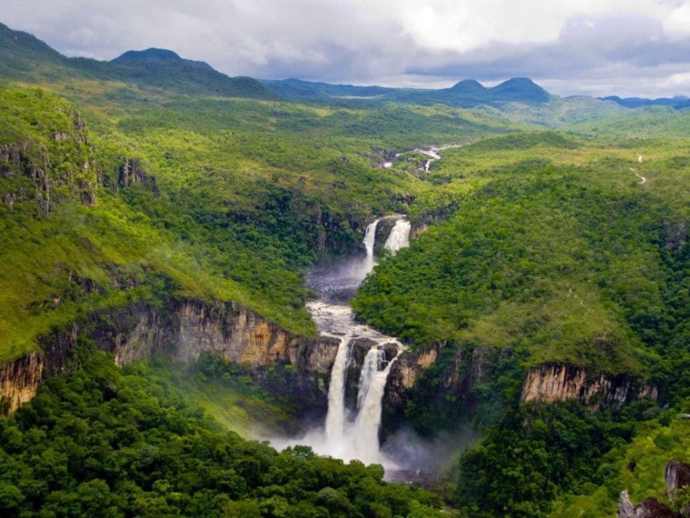

O Goiás é um estado localizado na região Centro-Oeste do Brasil e é conhecido por suas belas paisagens naturais, rica cultura e forte economia agropecuária. Sua capital, Goiânia, destaca-se pela qualidade de vida, áreas verdes e desenvolvimento urbano. O estado também abriga a cidade histórica de Goiás, famosa por sua arquitetura colonial e importância histórica. Goiás possui grande importância na produção agrícola e pecuária do país, sendo destaque no cultivo de soja, milho e criação de gado. Além disso, o estado é conhecido pelas festas tradicionais, música sertaneja e culinária típica, com pratos como pequi, empadão goiano e arroz com guariroba. A natureza também é um dos pontos fortes de Goiás, com cachoeiras, rios e áreas de cerrado que atraem turistas de várias regiões do Brasil. O estado une tradição, cultura e desenvolvimento econômico, sendo uma das regiões mais importantes do Centro-Oeste brasileiro.
